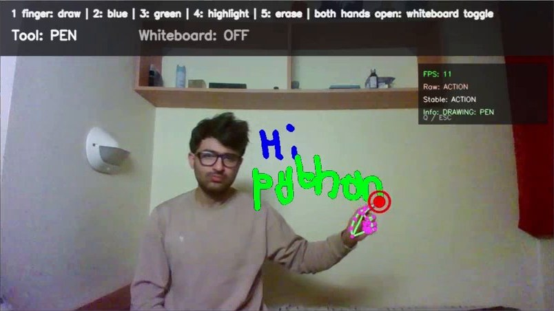
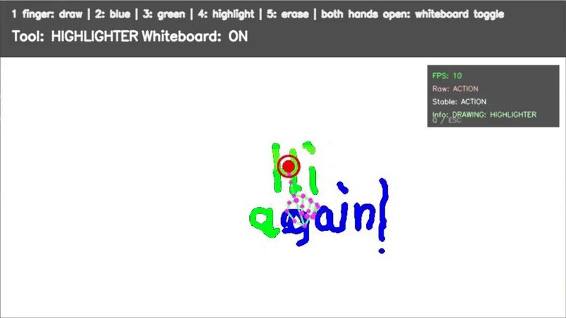

Hand Gesture Virtual Whiteboard
CodePersonal Project Real-time, CPU only Mar 2026
A real-time whiteboard you control with hand gestures in front of a webcam, without a mouse, stylus or touchscreen. MediaPipe Hands tracks 21 keypoints per hand, the raised fingers are mapped to tools, and your index fingertip becomes the pen. Strokes can go over the live camera image or onto a plain whiteboard. The pipeline is tuned to run smoothly on a laptop CPU.


1) Gesture Controls
| Gesture | Finger state [T, I, M, R, P] | Action |
|---|---|---|
| ☝️ Index finger | [0,1,0,0,0] | Draw |
| ✌️ Two fingers | [0,1,1,0,0] | Blue pen |
| 🤟 Three fingers | [0,1,1,1,0] | Green pen |
| 🖖 Four fingers | [0,1,1,1,1] | Highlighter |
| ✋ Open hand | [1,1,1,1,1] | Whole-hand eraser |
| 🙌 Both hands open | both [1,1,1,1,1], held for 0.9 s | Toggle whiteboard and clear |
Each finger is "up" when its tip is above its middle joint. The thumb is the exception: it uses a sideways check that depends on which hand it is, because the image is mirrored. The five on/off finger states form a vector that is looked up in the gesture table.
The whiteboard toggle needs two open hands held apart for almost a second. That is a rare pose, so it is almost never triggered by accident, and it is kept from being read as the eraser gesture.
2) Making It Feel Smooth
Gesture stabilisation
- A gesture only takes effect after it has been seen for 3 frames in a row, which removes flicker between tools.
- Drawing waits through a short warm-up after switching to the draw gesture, so a half-open hand doesn't leave a stray stroke.
- Anti-mess entry: drawing only starts once the fingertip has been nearly still (under 12 px per frame) for a few frames, and it stops the moment the gesture changes.
- A latch makes each mode toggle fire only once per hold.
Drawing engine
- The fingertip is smoothed with a One-Euro filter, which smooths heavily when moving slowly and lightly when moving fast, so strokes are steady without lag.
- Points between frames are interpolated, so fast strokes have no gaps.
- Separate layers for pen and highlighter, with the highlighter blended at 32% opacity.
- The eraser uses the hand's bounding box and fills in between frames for fast clean-up.
Running on a CPU
- The lightest MediaPipe hand model, run on frames scaled down to 75% before detection.
- A 960×540 MJPG camera stream with a one-frame buffer to keep latency low.
- The code is split into modules:
hand_tracker(MediaPipe wrapper and hand drawing),gesture_logic(finger states, classification, stabiliser),drawing_canvas(filters, layers, eraser) andapp(main loop and UI).